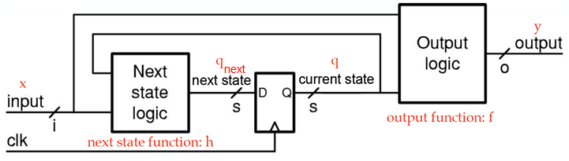
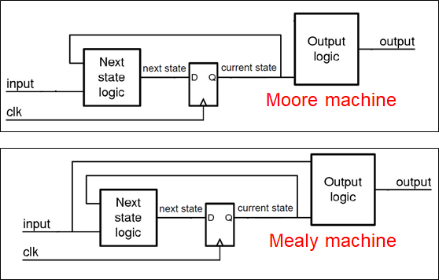
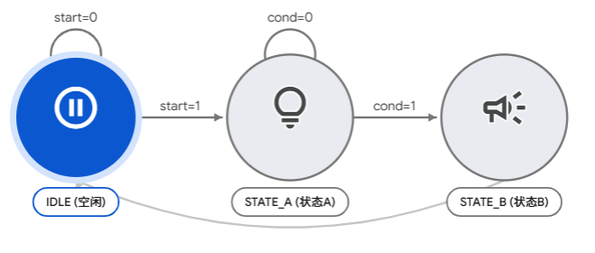

数字逻辑：有限状态机
实验目标
- 理解有限状态机（FSM）的基本概念
- 了解 Moore 型与 Mealy 型状态机的区别
- 掌握 Verilog 三段式状态机编写方法
1. 有限状态机
1.1 什么是有限状态机？
有限状态机（Finite State Machine, FSM）是一种时序逻辑电路模型，它： - 有有限个状态 - 在时钟驱动下，根据当前状态和输入信号，转移到下一个状态 - 根据状态（和输入）产生输出
状态机是数字系统设计的核心工具，广泛用于控制逻辑、协议处理、序列检测等场景。
1.2 状态机的组成

1.3 Moore 型 vs Mealy 型
| 特性 | Moore 型 | Mealy 型 |
|---|---|---|
| 输出取决于 | 仅当前状态 | 当前状态 + 输入 |
| 输出变化时刻 | 状态切换后 | 输入变化时可能立即变化 |
| 状态数 | 通常较多 | 通常较少 |
| 输出稳定性 | 更稳定（与时钟同步） | 可能产生毛刺 |
| 适用场景 | 控制逻辑、输出需稳定 | 需要快速响应输入 |

本课程推荐使用 Moore 型，因为输出更稳定，也更容易理解和调试。
2. 三段式状态机模板
三段式状态机将状态机的三个部分分别写在三个 always 块中，结构清晰、易于维护，是推荐的标准写法。
2.1 第一段：状态寄存器（时序逻辑）
// 第一段：状态寄存器——在时钟边沿更新状态
always @(posedge clk or negedge rst_n) begin
if (!rst_n)
state <= IDLE; // 复位到初始状态
else
state <= next_state; // 更新为次态
end
2.2 第二段：次态逻辑（组合逻辑）
// 第二段：次态逻辑——根据当前状态和输入，决定下一个状态
always @(*) begin
case (state)
IDLE: begin
if (start)
next_state = STATE_A;
else
next_state = IDLE;
end
STATE_A: begin
if (condition)
next_state = STATE_B;
else
next_state = STATE_A;
end
STATE_B: begin
next_state = IDLE;
end
default: next_state = IDLE;
endcase
end
2.3 第三段：输出逻辑（组合逻辑，Moore型）
// 第三段：输出逻辑——仅根据当前状态决定输出（Moore型）
always @(*) begin
case (state)
IDLE: begin
led = 1'b0;
end
STATE_A: begin
led = 1'b1;
end
STATE_B: begin
buzzer = 1'b1;
end
default: begin
led = 1'b0;
buzzer = 1'b0;
end
endcase
end
2.4 状态编码
使用 localparam 或 parameter 定义状态常量：
// 状态定义
localparam IDLE = 2'd0;
localparam STATE_A = 2'd1;
localparam STATE_B = 2'd2;
reg [1:0] state, next_state;

注意：
state和next_state都声明为reg类型，但state在时序块中赋值（综合为寄存器），next_state在组合块中赋值（综合为导线）。
3. 两段式状态机模板
和三段式状态机的区别在于
- 第一段：状态寄存器（时序逻辑）
- 第二段：次态逻辑 + 输出逻辑（组合逻辑合并）
3.1 第一段：状态寄存器（时序逻辑）
// 第一段：状态寄存器——在时钟边沿更新状态
always @(posedge clk or negedge rst_n) begin
if (!rst_n)
state <= IDLE; // 复位到初始状态
else
state <= next_state; // 更新为次态
end
3.2 第二段：次态逻辑 + 输出逻辑（组合逻辑）
// 第二段：次态逻辑 + 输出逻辑（组合逻辑合并）
always @(*) begin
// 根据当前状态和输入，决定次态和输出
case (state)
IDLE: begin
if (start) begin
next_state = STATE_A;
led = 1'b1; // 同时就输出
end
end
STATE_A: begin
led = 1'b1; // Moore型输出
if (condition)
next_state = STATE_B;
end
STATE_B: begin
buzzer = 1'b1;
next_state = IDLE;
end
default: begin
next_state = state;
led = 1'b0;
buzzer = 1'b0;
end
endcase
end
建议：最好使用三段式，虽然代码多一点，但结构更清晰，易于维护和调试。
4. 实验练习：计数检测
4.1 需求描述
分别使用两段式和三段式状态机设计一个计数检测电路，具有以下特性：
输入：
- clk：系统时钟（100MHz）
- x_in[4:0]：5位输入数据，在每个 clk 上升沿时采样
输出：
- y_out：有效性指示信号
功能：
电路在每个时钟上升沿采样 x_in 中的比特。累计接收到的所有1的总数。
- 当累计的1的总数是5的倍数时，
y_out = 1（有效） - 否则
y_out = 0（无效）
例如： | 时刻 | x_in | 本次1数 | 累计1数 | y_out | |------|------|--------|--------|-------| | 0 | 0b00001 | 1 | 1 | 0 | | 1 | 0b00001 | 1 | 2 | 0 | | 2 | 0b00001 | 1 | 3 | 0 | | 3 | 0b00011 | 2 | 5 | 1 ✓ | | 4 | 0b00111 | 3 | 8 | 0 | | 5 | 0b00010 | 1 | 9 | 0 | | ... | ... | ... | 15 | 1 ✓ |
4.2 Moore 型还是 Mealy 型？
- 输出
y_out仅取决于累计状态（已接收1的总数），与当前输入无关 - 因此是 Moore 型状态机
4.3 仿真验证
使用Testbench验证两段式和三段式实现的一致性：
`timescale 1ns/1ps
module tb_bit_counter();
reg clk, rst_n;
reg [4:0] x_in;
wire y_out_2stage, y_out_3stage;
bit_counter_2stage u1(...); // 两段式
bit_counter_3stage u2(...); // 三段式
initial clk = 0;
always #5 clk = ~clk;
initial begin
rst_n = 0; #50; rst_n = 1;
// 测试用例：单个1重复5次
repeat(5) begin
x_in = 5'b00001; #100;
x_in = 5'b00000; #100;
end
// 此时应该回到state=0，y_out=1
$finish;
end
endmodule
4.4 上板验证
由于直接用系统时钟（100MHz）测试困难，可以使用按键+消抖+边沿检测模拟时钟脉冲：
测试步骤：
- 烧录bitstream
- 设置5个开关：通过5个开关配置 x_in[4:0] 的值
- 按下按键：每按一次，计数器采样一次 x_in
- 观察现象：
- 数码管显示当前状态（optional）
- LED显示y_out信号
- 累计采样的"1"个数达到5的倍数时，y_out有效
5. 思考题
Q1：能否使用 Mealy 状态机？
思路：
- 在组合逻辑中计算 y_out = (next_state == S0) ? 1'b1 : 1'b0
- 这样输出会立即响应输入变化
- 但可能产生毛刺，需要小心使用
Q2：为什么不建议用一段式？
一段式是指将状态转移和输出都放在always @(posedge clk)块中。
缺点：
1. 可读性差：时序逻辑和组合逻辑混合，难以区分
2. 易出错：容易混淆阻塞赋值=和非阻塞赋值<=
3. 难维护：修改逻辑时容易引入bug
4. 规范性差：不符合Verilog HDL设计规范
5. 综合不确定：不同工具可能有不同理解，导致综合结果不同